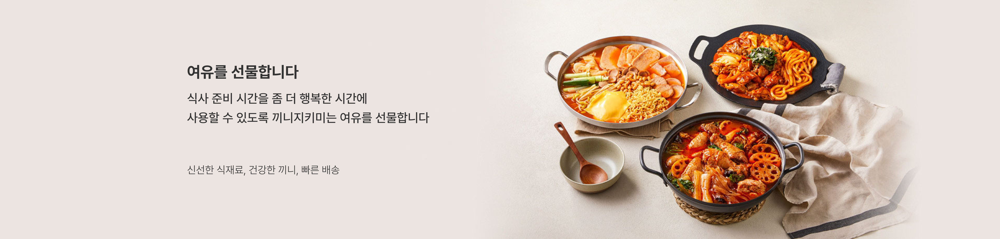
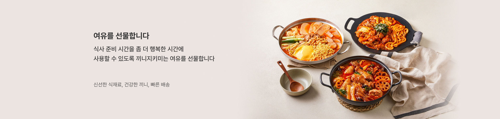

끼니지키미만의
철학이 담긴 '건강한 끼니'
끼니 지키미는 앞서 언급된 것처럼 여러분께 여유를 선물합니다. 일상에서 식사 준비하는 데 얼마나 걸리시나요?
메뉴와 식재료 고민을 하고 그걸 토대로 장을 보고 집에 와서 재료들을 손질하고 또 조리하고 그러다 보면 보통 평균적인 시간은 3시간 정도가 됩니다.
이 과정을 하루에 2 ~ 3번씩 하며 매일매일이 반복된다면 우리는 앞으로 얼마나 더 많은 시간을 쓰게 될까요?
이러한 시간에 만약 다른 일을 하게 되면 어땠을까? 시간을 좀 더 알차게 활용할 수 없나? 이런 고민해 보신 적 없으신가요?
끼니 지키미는 이런 고민들을 해결해 드립니다.

 장바구니
장바구니